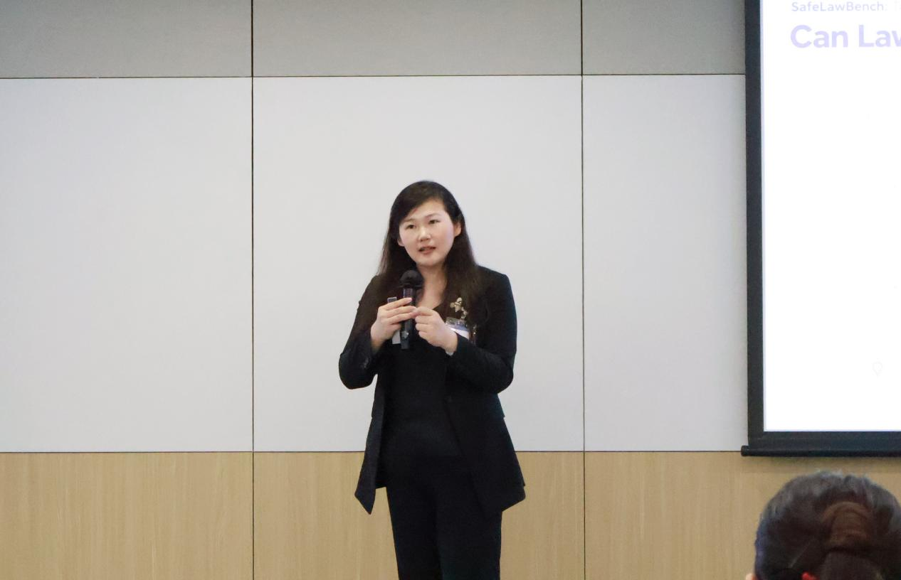
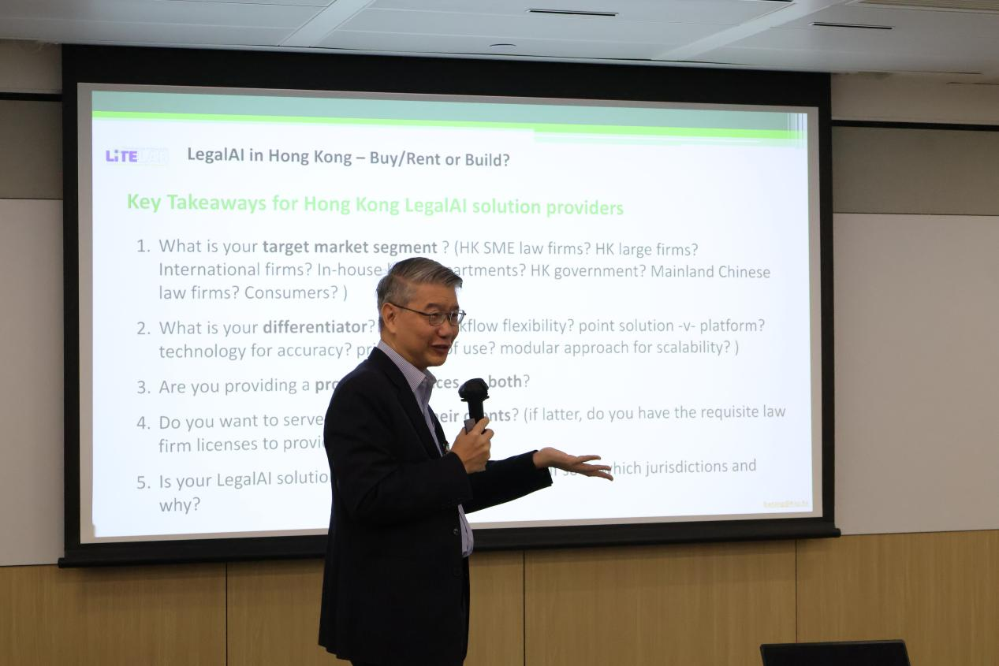
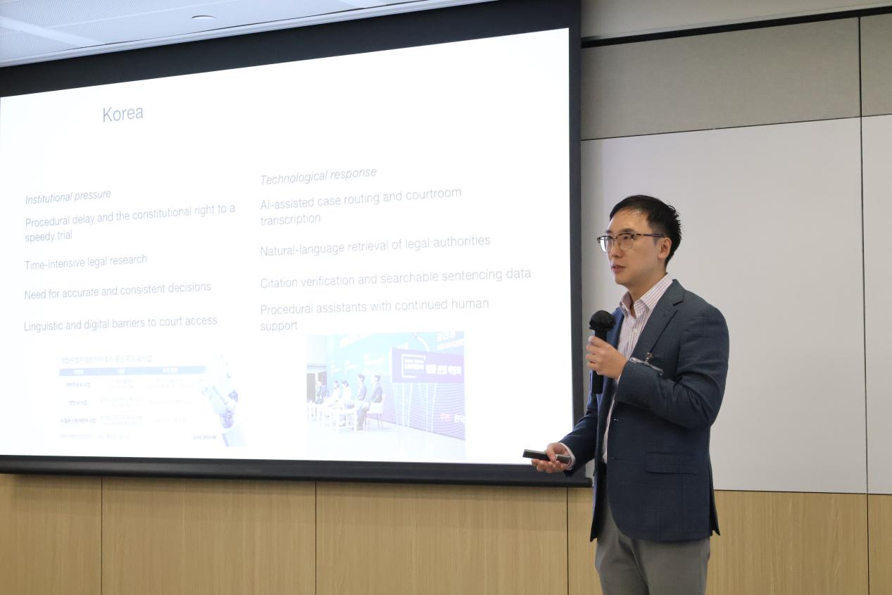
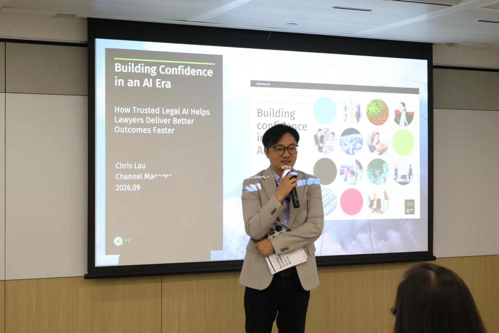
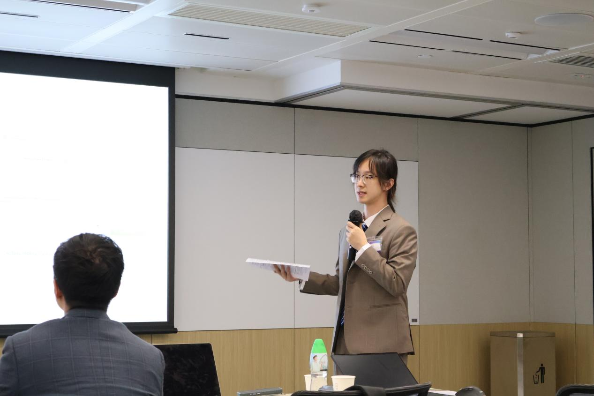
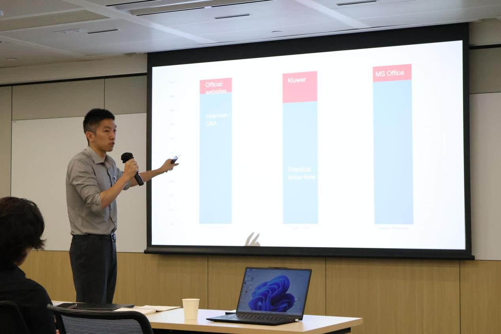
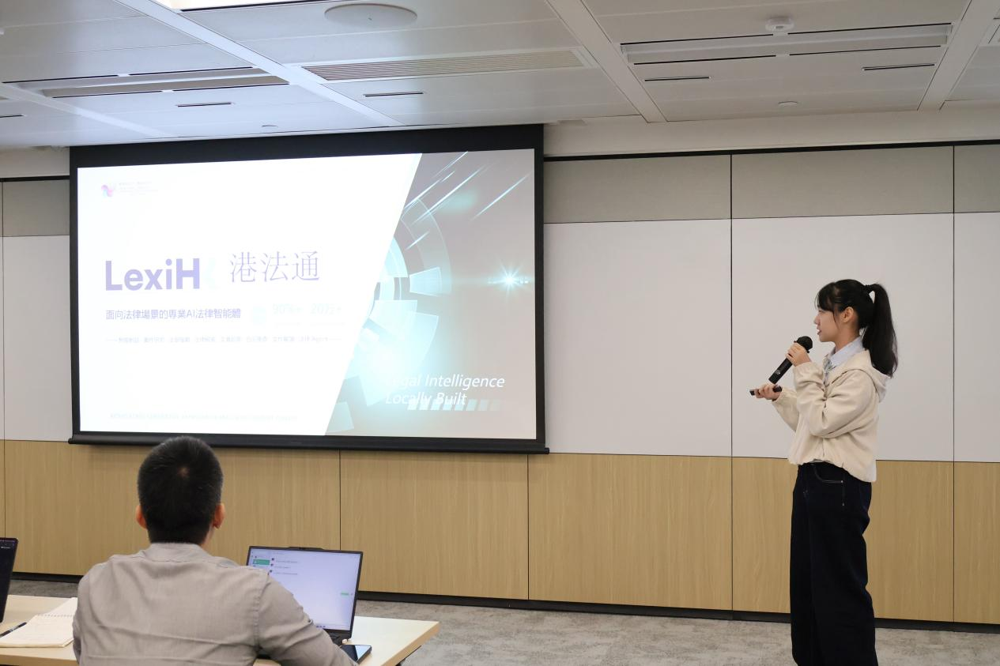
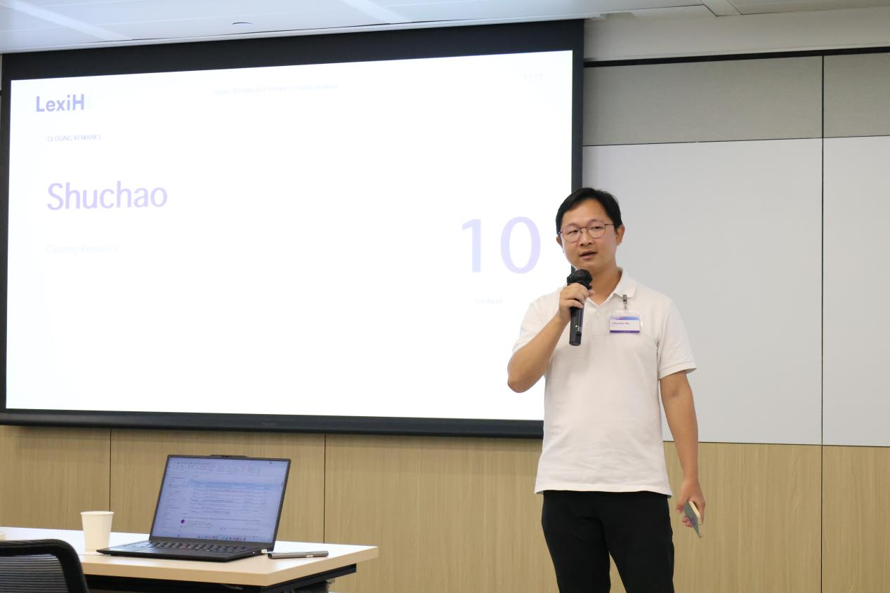
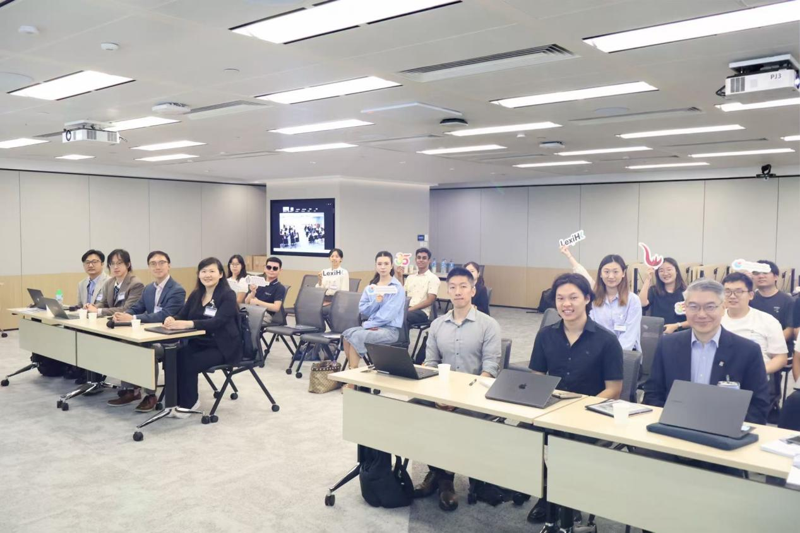

The Academic and Practice Seminar on Legal Technology brought together researchers, lawyers, legal information providers and technology developers at HKUST Business School Central on 22 September 2026. Discussions examined how legal AI can support professional work through reliable sources, verifiable reasoning and clear responsibilities.

The AI and Law research team at HKUST’s Academy of Interdisciplinary Studies and the LexiHK team jointly hosted the Academic and Practice Seminar on Legal Technology at HKUST Business School Central on 22 September 2026.
Under the theme “Trusted Legal Intelligence in Practice: Data, Research, Reasoning and Cross-Jurisdictional Workflows,” the seminar combined in-person participation with online contributions via Zoom. Speakers from HKUST, the University of Hong Kong, City University of Hong Kong and Beijing Jiaotong University joined representatives from Wolters Kluwer, CaseByte, Detong Intelligent Chain and Fangda Partners.
The programme connected academic research with product development and legal practice. Across presentations, demonstrations and a roundtable, participants examined a shared question: what makes legal AI sufficiently trustworthy for use in real professional workflows?
Verification and professional responsibility

Professor Sirui Han opened the seminar with a presentation on the transition from usable to trustworthy legal AI. She examined the relationships among data, reasoning, verification and professional responsibility, emphasising that the ability to generate an answer is only the beginning of responsible application.
Legal professionals also need to establish whether the supporting information can be checked, whether conclusions can be reviewed and how responsibility is allocated when AI contributes to their work. These questions provided a common framework for the subsequent discussions.
Research perspectives on institutions and professional judgment

Brian Tang, founding Executive Director of HKU’s LITE Lab, discussed the strategic and technical considerations involved in buying, renting or building legal AI. His presentation examined the choices facing legal organisations as they assess available technologies and determine how these systems fit their institutional needs.

Alvin Hoi-Chun Hung, Assistant Professor at City University of Hong Kong, compared the institutional contexts of judicial AI in China and South Korea. He introduced a localisation checklist covering scope, impact, responsibility, legal basis, visibility and remedies, providing a framework for examining how AI applications interact with different judicial systems.
Joining online from Beijing Jiaotong University, Yulu Jin discussed how judicial professionals perceive and respond to erroneous AI advice. Her contribution brought professional judgment into the discussion of system reliability, directing attention to how users recognise and manage mistakes in practice.
Applications in legal information and professional services
The practice-focused session explored how legal AI is being incorporated into specific products and tasks.

Chris Lau of Wolters Kluwer discussed the role of trusted legal information in helping lawyers produce better work more efficiently. Rocky Li, co-founder of CaseByte, demonstrated applications involving case-citation relationships and intelligent statutory interpretation. He also proposed developing a shared legal AI benchmark that could support collaboration among researchers, practitioners and technology companies.

Zirui Wang, Chief Operating Officer of Detong Intelligent Chain, demonstrated ShieldAssist, an anti-fraud tool designed to help victims organise case materials. His presentation considered how AI can support more inclusive legal services while reserving exceptional cases and legal responsibility for human judgment.

Wyatt Zhang of Fangda Partners examined AI from the perspective of an M&A lawyer. Drawing on experience with internally developed due-diligence tools, he discussed how AI-assisted work interacts with the communication skills, professional experience and project-management capabilities required in legal transactions.
Cross-jurisdictional workflows and accountability
The roundtable addressed practical barriers to adoption, including inaccurate outputs, citations that are difficult to trace, confidentiality requirements and differences between organisational workflows.
Participants discussed beginning with tasks that are relatively straightforward to review, such as information retrieval and initial drafting, supported by human review and mechanisms for tracing problems. For cross-jurisdictional work, they emphasised the importance of identifying the source, applicable jurisdiction and legal authority of retrieved materials.
The discussion also distinguished AI-assisted decisions from automated decisions. Product providers need to explain system capabilities and information sources; organisations need appropriate review procedures; and legal professionals need to examine the material they ultimately adopt. Matters involving significant rights and obligations require substantive human judgment.
LexiHK demonstration and closing discussion

LexiHK product manager Xinyi Wang demonstrated the platform’s cross-jurisdictional legal retrieval capabilities. She highlighted the importance of showing the relationship between legal sources, their scope of application and the conclusions generated from them.
The team also introduced LexiHK’s applications in legal research, drafting, contract review and document interpretation. The demonstration connected the seminar’s broader discussion of trustworthiness with practical questions about source traceability and the review of generated results.

In his closing remarks, LexiHK technical lead Shuchao Wu stressed that trustworthy legal intelligence requires technical capabilities to work alongside professional judgment and responsibility mechanisms.

The seminar provided a forum for sustained exchange between academic research and professional practice. Its discussions highlighted how improvements in retrieval, document processing and case research can support legal professionals while preserving their responsibility for interpretation, review and judgment.
All events and news